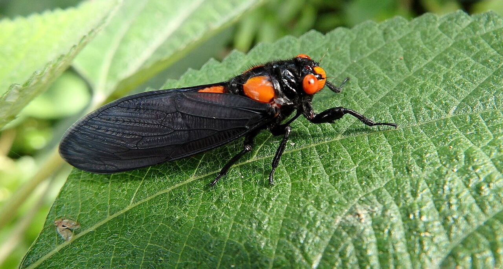
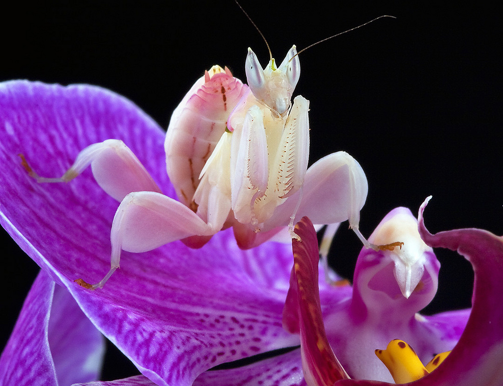
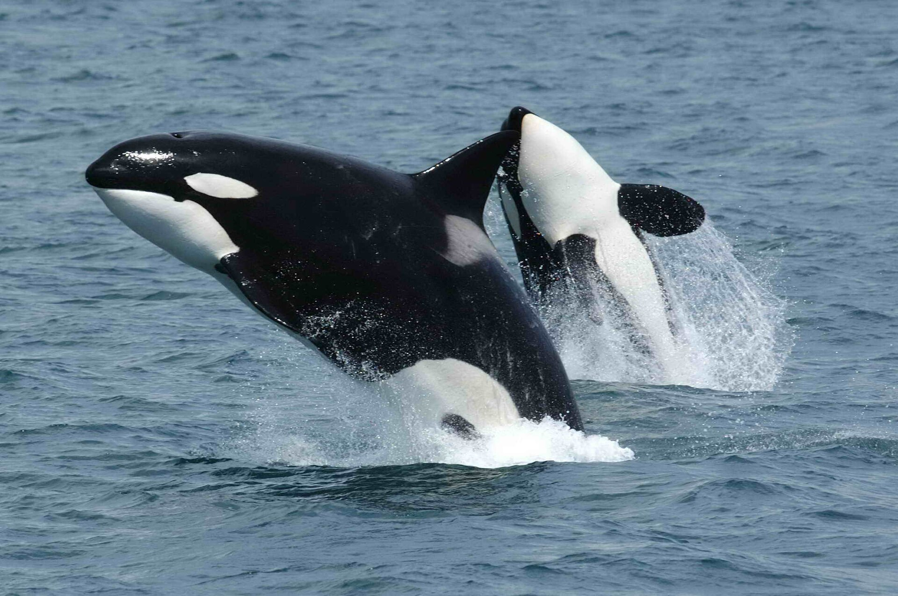
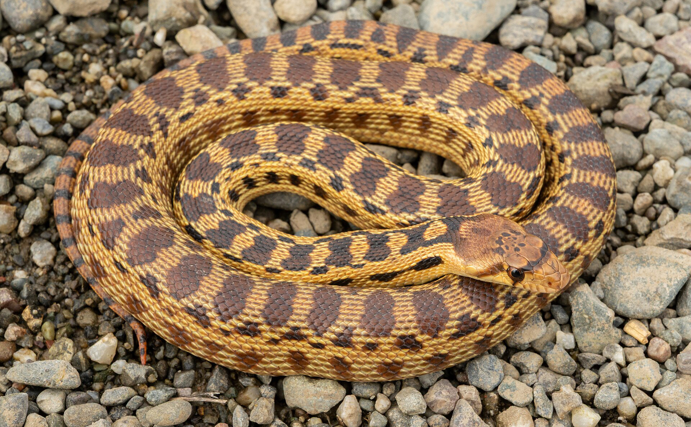
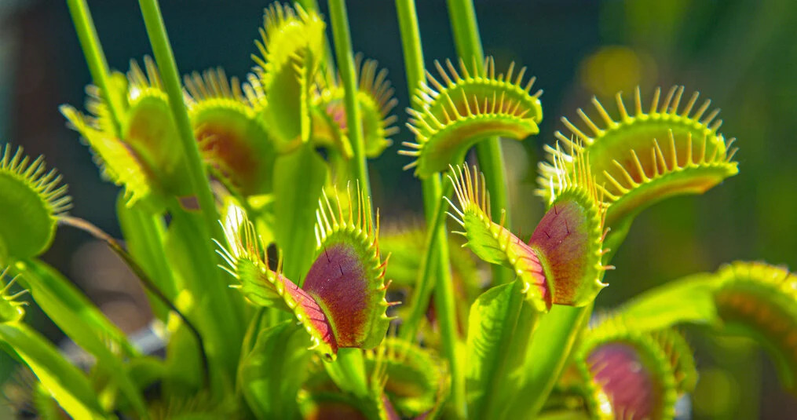
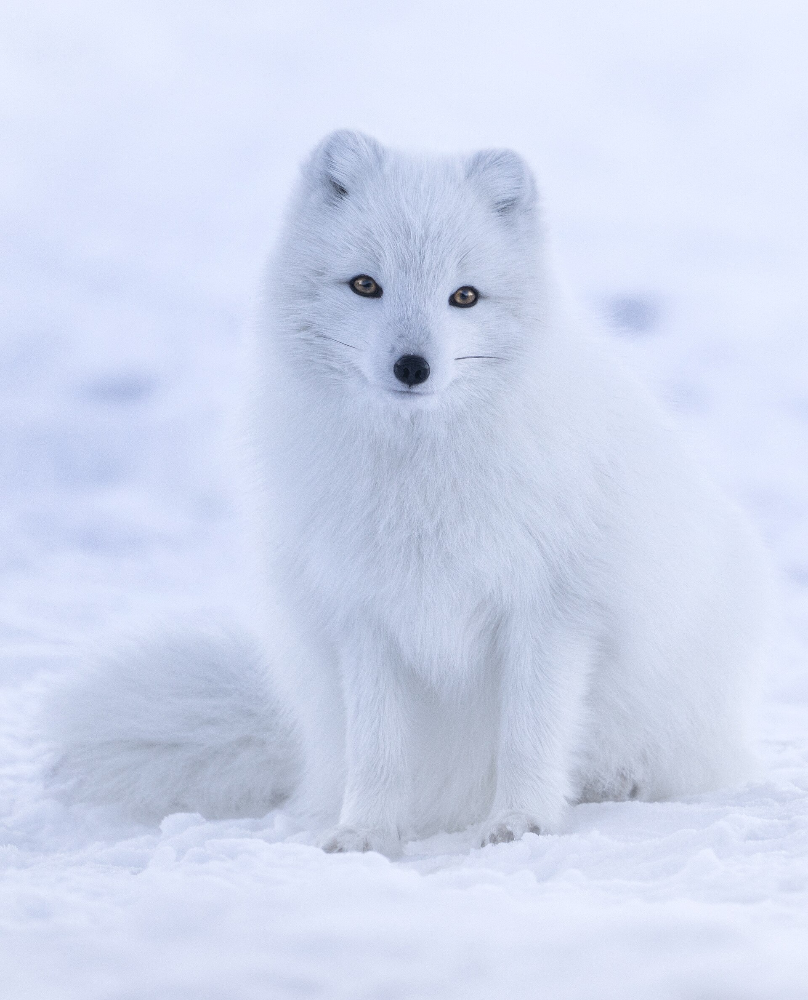

La visión es una de las formas más comunes de camuflaje. Muchas especies tienen patrones, colores y formas que les permiten mezclarse con su entorno y no ser vistos.
El mimetismo visual permite que un animal se parezca a una hoja, una piedra, otra especie o incluso al fondo natural donde vive.

Camaleón común

Cigarra negra y escarlata

Cigarras comunes

Erizo común

Insecto palo de Vietnam

Mantis orquídea

Mariposa Caligo común

Mariposa hoja seca común

Orca

Planta jarra

Pulpo mimo

Serpiente toro

Tiburón alfombra

Venus atrapamoscas
